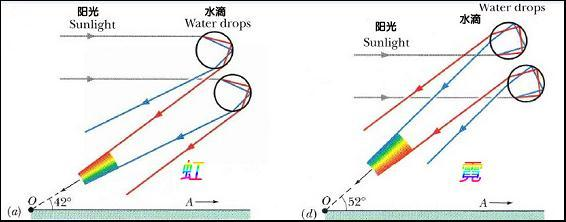

这几天全国大范围降雨，不少地方都报道说出现了双彩虹，我也在前两天偶然间亲眼看到了这之前奇特的现象o(￣▽￣)ブ
然而双彩虹到底是怎么回事？
双彩虹由内侧的“虹（主虹）”和“霓（副虹）”组成，一般出现在雨后初晴的夏季傍晚。

虹，也成为主虹，由阳光在水滴中经过两次折射和一次反射形成，光路图如左图所示。阳光射入水滴后向下反射后再出射至人眼，由于阳光入射时发生色散，并且红色光的折射率最小，所以与地面形成的角度最小，而折射率最大的紫色光则与地面形成的角度最大。所以红色出现在虹的外侧而紫色出现在虹的内侧。
霓，即副虹，光路图如右图所示，阳光入射后经过两次向上的反射出射。这样形成的颜色排布恰好与虹相反，呈现外紫内红，且位于主虹之上。由于霓的形成需要两次反射，比虹多一次，导致霓的亮度比虹暗得多，故称为“副虹”。人们在天空中观察到的彩虹通常是主虹，而副虹因为太暗一般不会被观察到。所以这次能看到双彩虹我还是有点激动的，毕竟之前只是才书中看到过。
由于角度的限制，太阳位置越高形成的彩虹的位置越低，这也是为什么彩虹一般都在傍晚而不是正午出现的原因。
另外，由阳光更多次折射形成的第三虹，第四虹也是存在的，知识因为亮度实在太暗，肉眼不易辨别。